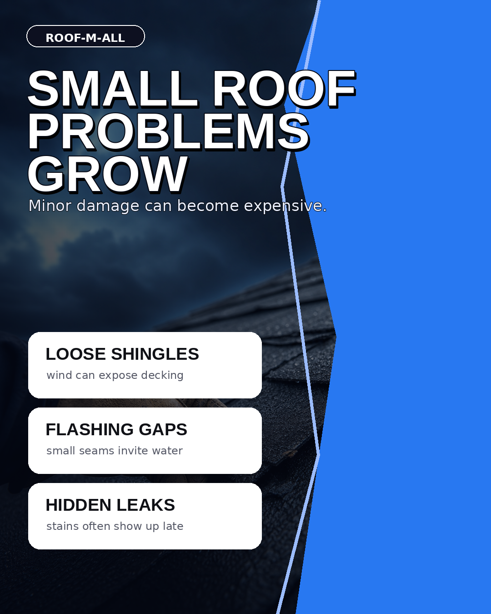
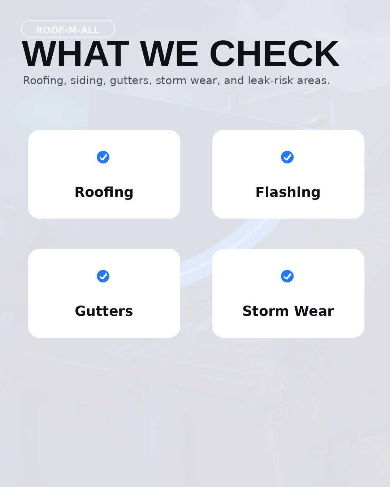
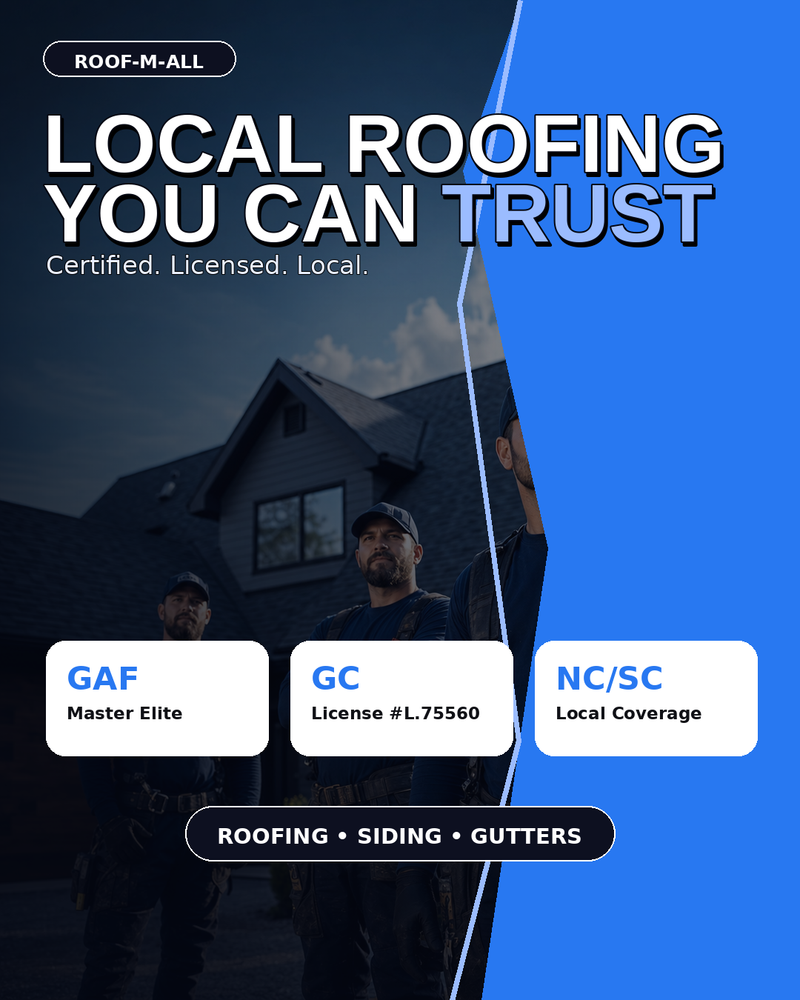

Evergreen-style second pass
Roof-M-All carousel V2
Richer scene-based version built to match the Evergreen polish more closely.


Richer scene-based version built to match the Evergreen polish more closely.


